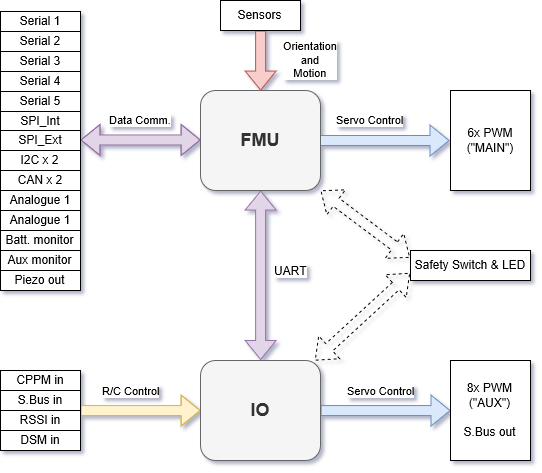

PX4 Reference Flight Controller Design
The PX4 reference design is the Pixhawk series of flight controllers. First released in 2011, this design is now in its 5th generation (with the 6th generation board design in progress).
Binary Compatibility
All boards manufactured to a particular design are expected to be binary compatible (i.e. can run the same firmware). From 2018 we will offer a binary compatibility test suite that will allow us to verify and certify this compatibility.
FMU generations 1-3 were designed as open hardware, while FMU generations 4 and 5 provided only pinout and power supply specifications (schematics were created by individual manufacturers). In order to better ensure compatibility, FMUv6 and onward will return to a complete reference design model.
Reference Design Generations
- FMUv1: Development board (STM32F407, 128 KB RAM, 1MB flash, schematics) (no longer supported by PX4)
- FMUv2: Pixhawk (STM32F427, 168 MHz, 192 KB RAM, 1MB flash, schematics)
- FMUv3: Pixhawk variants with 2MB flash (3DR Pixhawk 2 (Solo), Hex Pixhawk 2.1, Holybro Pixfalcon, 3DR Pixhawk Mini, STM32F427, 168 MHz, 256 KB RAM, 2 MB flash, schematics)
- FMUv4: Pixracer (STM32F427, 168 MHz, 256 KB RAM, 2 MB flash, pinout)
- FMUv4 PRO: Drotek Pixhawk 3 PRO (STM32F469, 180 MHz, 384 KB RAM, 2 MB flash, pinout)
- FMUv5: Holybro Pixhawk 4 (STM32F765, 216 MHz, 512 KB RAM, 2 MB flash, pinout)
- FMUv6: work in progress, final name TBD, variant 6s (STM32H7, 400 MHz, 2 MB RAM, 2 MB flash) and variant 6i (i.MX RT1050, 600 MHz, 512 KB RAM, external flash)
Main/IO Function Breakdown
The diagram below shows the division of bus and functional responsibilities between the FMU and I/O boards in a Pixhawk-series flight controller (the boards are incorporated into a single physical module).

Some Pixhawk-series controllers are built without the I/O board in order to reduce space or complexity, or to better address certain board use-cases.
The I/O board is disabled by setting parameter SYS_USE_IO=0. When the I/O board is disabled:
- The MAIN mixer file is loaded into the FMU (so the "MAIN" outputs listed in the Airframe Reference appear on the port labeled AUX). The AUX mixer file isn't loaded, so outputs defined in this file are not used.
- RC input goes directly to the FMU rather than via the IO board.
Flight controllers without an I/O board have MAIN ports, but they do not have AUX ports. Consequently they can only be used in airframes that do not use AUX ports, or that only use them for non-essential purposes (e.g. RC passthrough). They can be used for most multicopters and fully autonomous vehicles (without a safety pilot using RC control), as these typically only use MAIN ports for motors/essential controls.
Flight controllers without an I/O board cannot be used in airframes that map any
AUXports to essential flight controls or motors (as they have noAUXports).
Manufacturer flight controller variants without an I/O board are often named as a "diminutive" of a version that includes the I/O board: e.g. Pixhawk 4 Mini_, CUAV v5 nano.
Most PX4 PWM outputs are mapped to either MAIN or AUX ports in mixers. A few specific cases, including camera triggering and Dshot ESCs, are directly mapped to the FMU pins (i.e. they will output to either MAIN or AUX, depending on whether or not the flight controller has an I/O board).